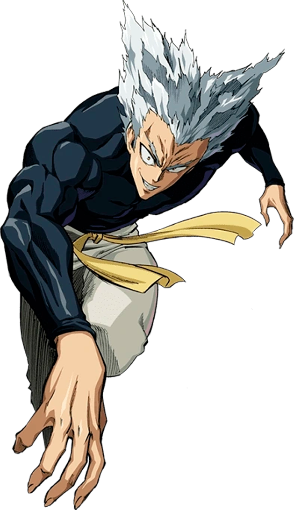
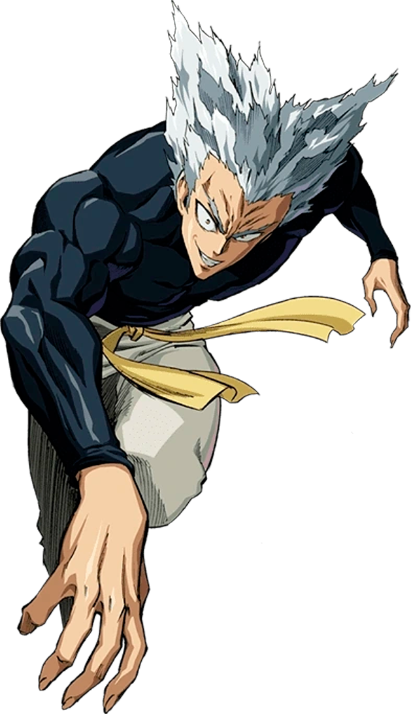
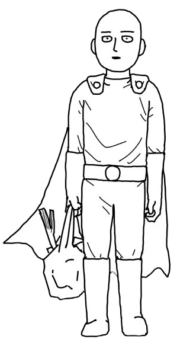
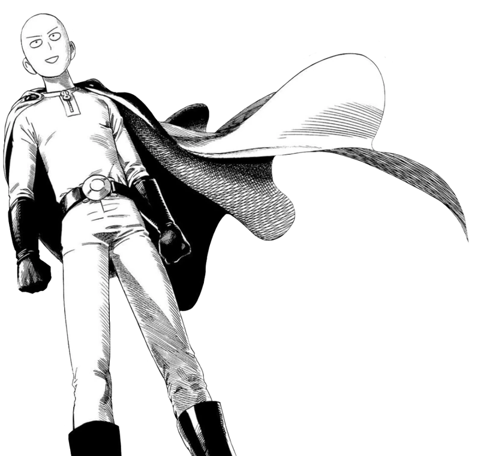

Personajes
Personajes que describo
Personajes que describo
 Saitama
Punpun
Sun Wukong
Saitama
Punpun
Sun Wukong
Garou es un personaje del web comic One Punch Man, garou aspira a ser el mounstro más fuertes del mundo. En su travesía empieza a experimentar la mounstrificación, cada experiencia cercana a la muerte lo vuelve más fuerte y su aspecto va cambiando, para la etapa final puede rivalizar con Saitama

 

Saitama es el protagonista de One Punch Man, también es el personaje más fuerte de la obra conocido hasta la fecha, es una parodia del protagonista que entrena para ser el más fuerte, entreno tanto que no tiene rival y se quedo calvo.
 
Onodera Punpun es el protagonista del manga Oyasumi-Punpun, durante toda la obra se representa con una figura particular que se asemeja a un ave, se rumorea que el personaje es representado de esa forma para no justificar sus acciones porque canónicamente es alguien atractivo